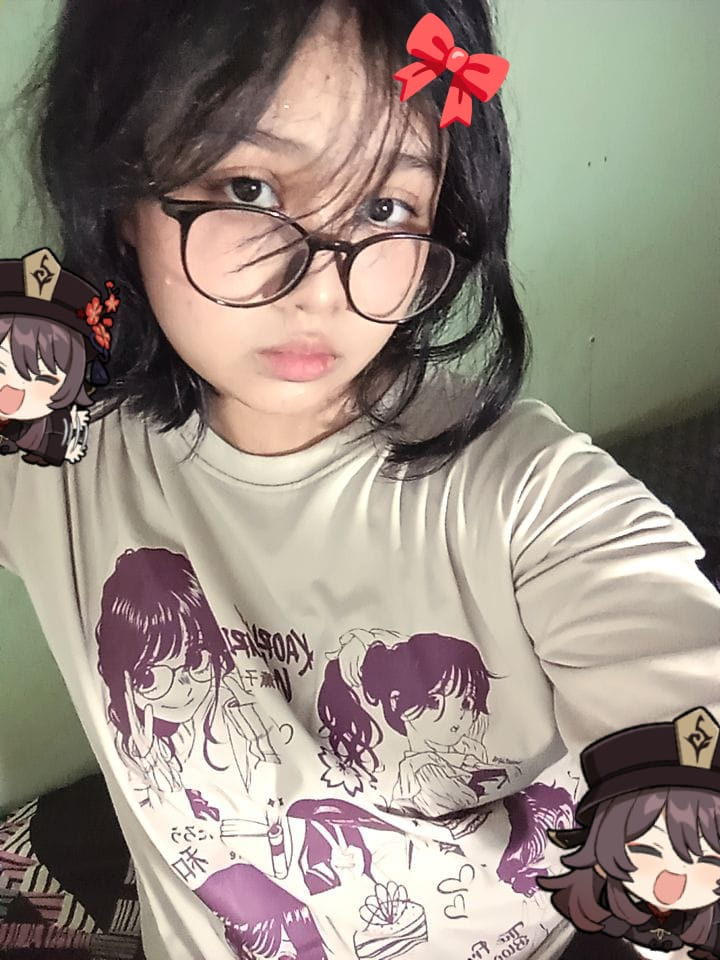
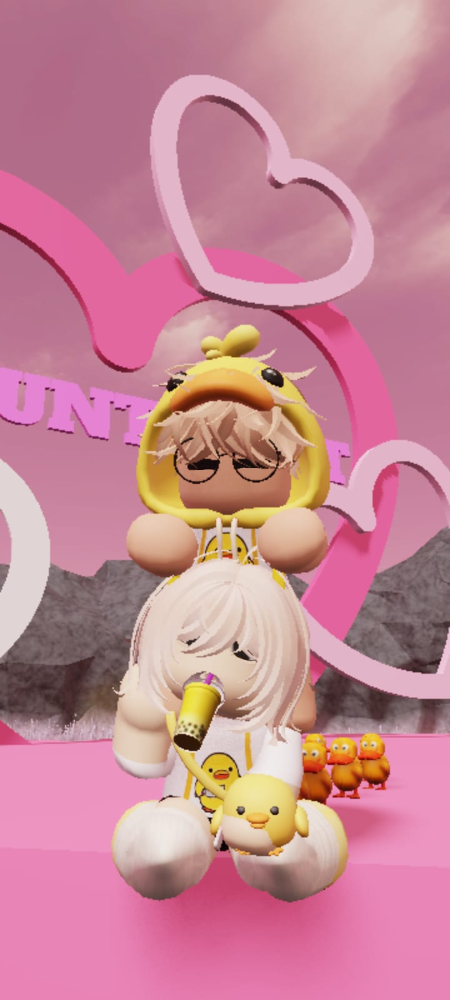
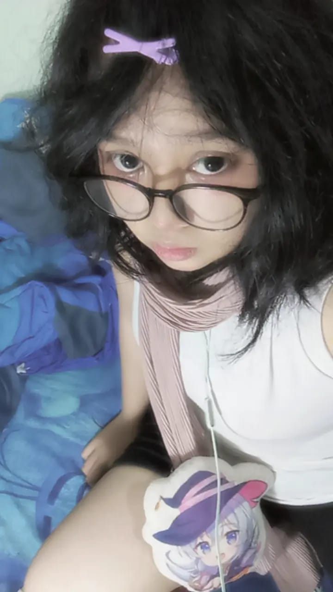
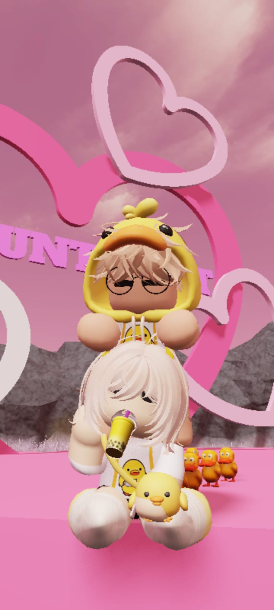
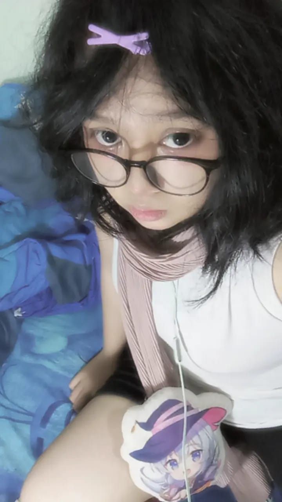
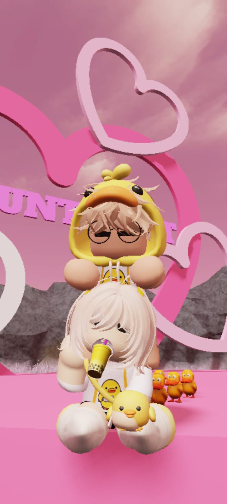
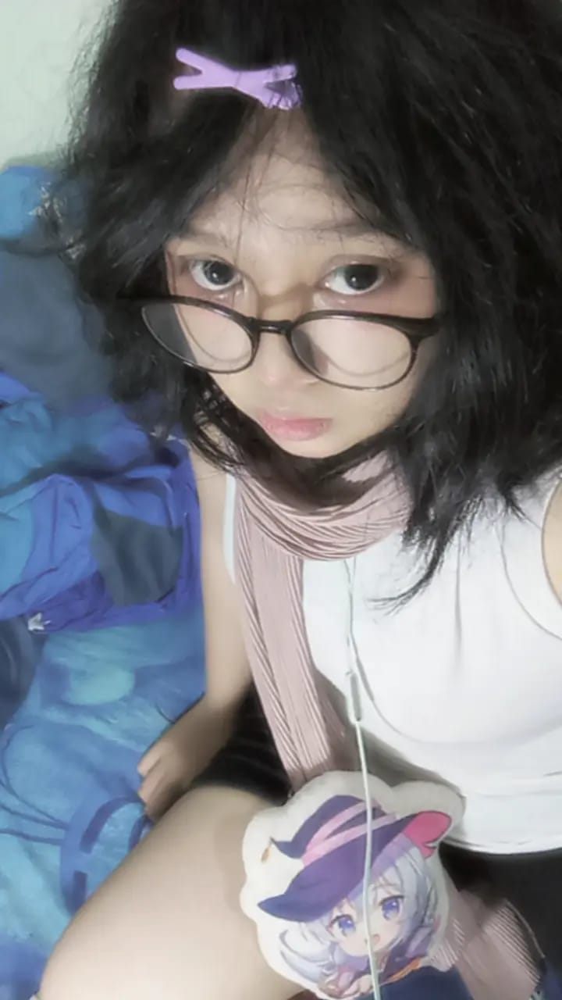
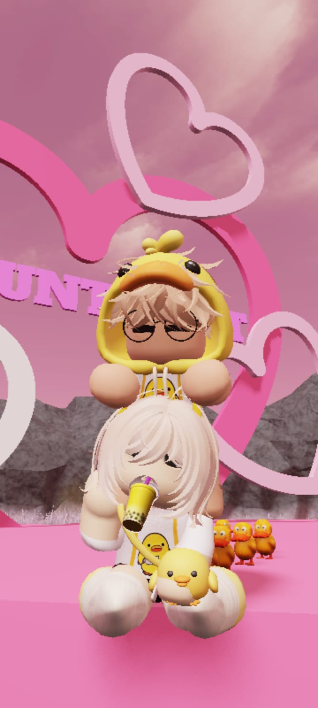
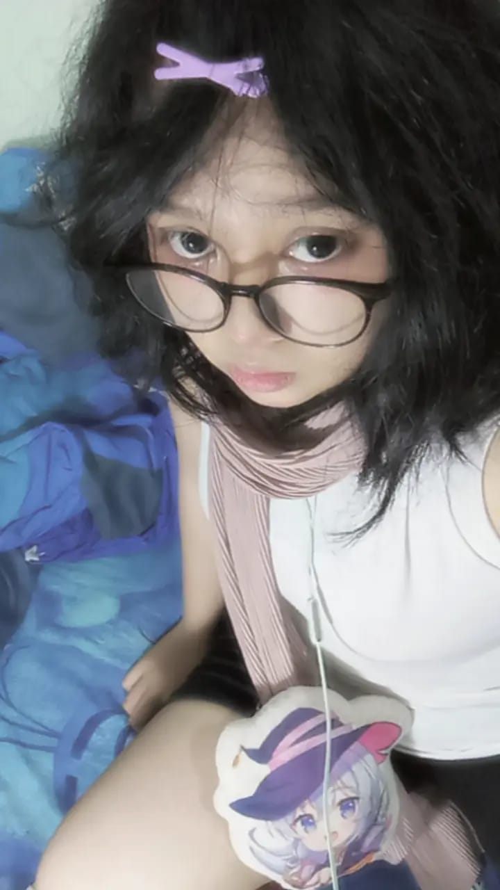

 







Happy Birthday! Love you from Idzhar 💖


Happy Birthday! Love you from Idzhar 💖
Waktu terus berjalan, tepatnya sudah...
Sejak Senin, 28 November 2011. Hari kelahiran perempuan terindah yang pernah 'ku temui.
Dan, Sejak aku memutuskan untuk ingin terus hidup bersamamu. ~ 24 Mei 2025.